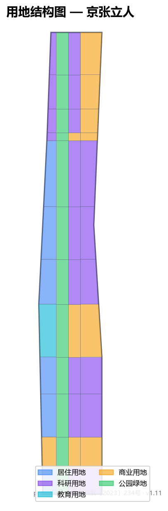
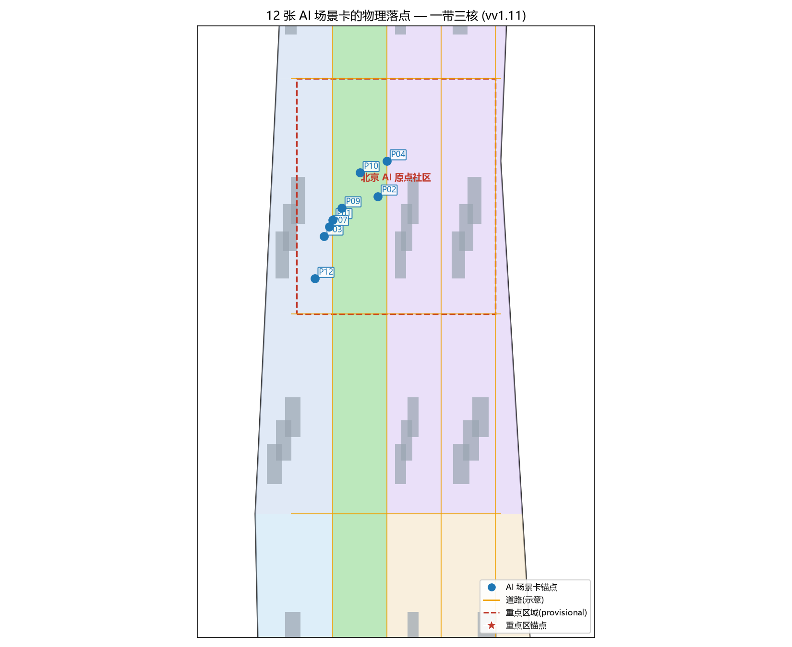
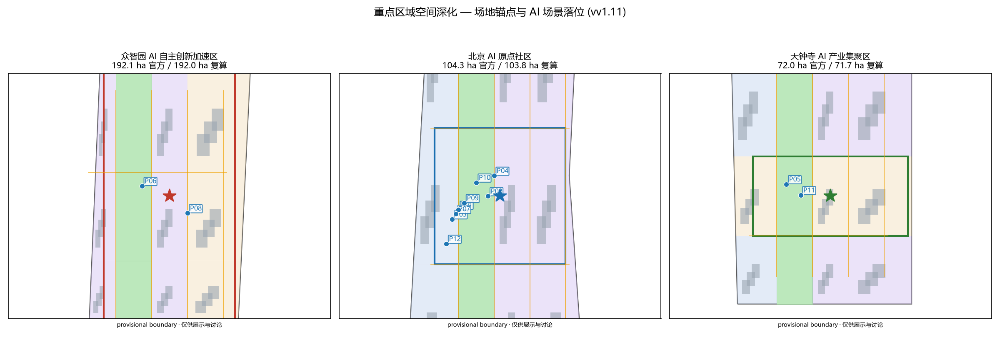

京张立人——以人为本的百年京张AI创新带城市设计
以「以人为本」为纲，把百年京张铁路遗产重新交还给在此生活、工作、创造的人。方案用京张遗址公园地面缝合带把被轨道割裂的城市重新连成可步行的日常创新街区，并以众智园、AI原点社区、大钟寺三处重点区作为可落地、可复核的空间载体。所有边界为 provisional，仅用于生成与讨论。
京张立人——以人为本的百年京张AI创新带城市设计
设计依据与资料清单
本方案的判断来自四类公开或清权材料。第一类是北京市规划和自然资源委员会海淀分局发布的《百年京张AI创新带城市设计国际方案征集资格预审公告》及其公开任务书，它是三层范围、三处重点区域、设计任务、表达深度和成果语境的主控依据 来源。第二类是面向全球智能体的任务书，它补充了十条共创原则、持续参与机制、三大定位、五大功能、三区两翼与六项智能体任务 标准 来源。第三类是仓库登记的项目资料包，包含用地分类、图层枚举、规划限制与来源可用性边界 来源。第四类是登记在册的公开来源与临时来源用途边界，本方案据此区分「可作正式结论」「仅作背景」「仅作临时线索」三类材料 来源。
第五类是 2024—2026 年公开的官方批复与权威报道。空间结构类依据《京张铁路遗址公园沿线街区控规批复（2026 年 8 月）》与京张铁路遗址公园二期建成开放（2026 年 8 月）来源 来源；产业与非空间目标类依据全球首个人工智能街区发布（2024 年 6 月）、《中关村科学城人工智能全景赋能行动计划（2024—2026 年）》与海淀区「十五五」规划纲要，构成方案「可执行语言」与任务书相关的实证锚点 来源 来源 来源。
本方案同时把海淀区已公开的施政文件作为「可执行语言」的标尺。海淀区「两区」建设工作方案（2020—2021）以「谁来做、为谁做、做到什么程度、用什么资源、如何检查」组织条款，并给出 55/60 亿美元外资、1065/1070 亿元出口、15 家跨国总部等可核验目标 来源；《海淀区「人工智能+养老」三年行动计划（2026—2028）》建立「区级统筹—街道执行—社区落地」三级采集体系，并明确「每年完成 3 个智慧养老社区试点」的量化交付 来源。本方案据此要求自己的更新项目也按「责任主体—对象—阈值—资源—检查」表达，避免停留在概念名词 来源 来源 深度。
本方案不声称拥有非公开规划图件、非公开空间数据或内部指标。公告仅给出三层范围的文字四至与约面积，没有给出可验证坐标系的精确 polygon、控规条件或现状数据，因此本方案所用的总体设计范围边界与三处重点区边界均为仓库登记的 provisional 临时边界，只能在生成、自检、可视化和设计讨论中使用，不能作为 official redline、审批依据或精确面积依据 空间数据 空间数据。这一数据缺口本身不阻断内容评分；一旦取得官方或清权 polygon，本方案的所有图层、图纸、HTML 与指标都需随边界重算，不能只替换单个文件 深度。
本方案的命名、Logo、空间结构与全部场景，都围绕一个判断展开：百年京张 AI 创新带应当是一条以人为本的带。AI 创新最终要让人立得住、走得远、活得更好；城市更新最终要让铁路遗产重新属于在此生活、工作、创造的人，而不是只属于技术叙事 标准。这一判断贯穿全部十三章，也是本方案与「只做品牌策划、只写宏大叙事」做法的区别。
大道至简：AI 与人的关系（理论骨架）
本方案不做「以 AI 为中心」的规划，而做「以人为中心、AI 服务于人」的规划。这是整份方案的取舍基线，也是它区别于大多数同类提交的地方：多数提交把「智能体」「场景」「机制」摆在最前，本方案把「人从哪里来、人要到哪里去、人在空间里怎么走、谁被落下」摆在最前 来源。
我们借四条公开、可核验的理论线索立这个基线。其一，马克思在《关于费尔巴哈的提纲》末尾写道：「哲学家们只是用不同的方式解释世界，问题在于改变世界。」城市设计的价值不在给出又一套漂亮概念，而在能否落到可被居民、企业、运营者使用和质询的空间 来源。其二，马克思论异化劳动提醒我们：当技术成为目的，人会沦为被技术安排的客体；AI 创新带若只服务算力与产值，就重复了异化，本方案因此把「人立得住、走得远、活得更好」设为不可让渡的判据 来源。其三，芒福德在《城市发展史》中把城市概括为「容器与磁体」——它因人的聚集与交往而生；京张创新带首先要让地面重新可聚集、可交往，技术才有人托底 来源。其四，雅各布斯在《美国大城市的死与生》与列斐伏尔在《空间的生产》中分别强调：街道是给人用的、空间是社会关系的产物；所谓更新，是修复人的日常动线，而非叠加密集的概念图层 来源。
这些不是装饰性引用。它们对应到本方案的硬约束：凡无法说明「服务哪类具体的人、解决哪一种具体的步行 / 交往 / 转化断点」的 AI 场景，不进入正式设计；凡只能写「不怎样」而不能写「是何种空间」的段落，视为未完成 深度 来源。 这些不是装饰性引用。它们也得到当代真实研究的呼应，而非停留于经典。清华—MIT 跨学科团队在《自然·计算科学》提出「大语言模型驱动的智能城市规划框架」，把 AI 定位为规划师的「智能规划助手」，以「概念设计—方案生成—效果评估」三阶段闭环实现人机协同，而非替代人 来源。清华尹稚教授解读中央城市工作会议时强调「以人民为中心的宜居城市」，指出城镇化正「从地租经济驱动向人民城市发展模式转变」，宜居城市「以人为本」是底层逻辑 来源。这与本方案「AI 服务于人」完全一致。
更进一步，本方案把「未来人工智能与人在一个城市的生活」作为一条明确的设计命题，而非背景装饰。规划要回答的不是「AI 能做什么」，而是「人如何与 AI 共处在同一座城市里、过得更好」：独居老人被无感守护而非被监视，创业者下楼即是协作与订单而非通勤数小时，居民在遗址公园里与 AI 设施自然相处而不必对着屏幕发指令，残障者与推婴儿车者享有同等连续的地面。蒋泓峰以马克思主义政治经济学反思「数字劳动的异化」，警示数字化转型中「见物不见人」的失衡，提出以「人的自由全面发展」为目标的「劳动·生活·城市」协同范式 来源。本方案把这一警示写成硬约束：凡把人降格为数据流、把生活压缩为指标的 AI 场景，不进入正式设计；凡只谈算力与产值、不谈具体的人与具体的生活断点的叙事，视为未完成 深度 来源。

三层范围工作框架
方案严格按公告确定的三个层次组织工作。统筹研究范围约 43.6 平方公里，重点是 AI 产业生态、战略定位、创新链与未来城市形态的判断 空间数据。总体设计范围约 11.4 平方公里，是本方案正式落图的范围，要求形成城市更新总体框架、产业空间布局、交通市政支撑与城市风貌控制。重点区域范围约 3.68 平方公里，是三处详细设计地区，要求明确功能业态、建筑规模、拆改留分类、公共空间连通与交通组织 指标。公告对三处重点区域给出面积：众智园约 192.1 公顷、北京 AI 原点社区约 104.3 公顷、大钟寺 AI 产业集聚区约 72.0 公顷。本方案因公告未提供可验证坐标系 polygon，仍以仓库登记 provisional 边界落图 空间数据；作为诚实性核验，用 CGCS2000 等积投影复算 provisional 边界面积分别为 192.0 / 103.8 / 71.7 公顷，总体设计范围复算 11.36 平方公里，与公告约值偏差均小于 0.5% 来源 深度。这一核验只证明边界量级与官方公告一致，不改变 provisional 性质：正式 polygon 到位后仍须全量重算。
三层范围在 compliance_matrix.json 中逐条映射，保证公告 1.3、1.4、1.5 与 agent.1 至 agent.6 的必选任务都有章节、图层、指标、图纸与 HTML 证据。统筹研究决定产业链与城市形态判断，总体设计把判断落实到更新项目、空间结构与设施承载，重点区域详细设计验证具体地块、建筑、交通、公共空间与 AI 场景的可实施性 深度。任何无法从结构化数据复算的面积、比例、规模或项目数量，本方案不写入正式结论。
本方案建议的总体概念为「京张立人」：以京张遗址公园地面缝合带为历史与公共空间主轴，以众智园、AI 原点社区、大钟寺三处重点片区为创新锚点，以高校、企业、社区与轨道站点为日常网络，形成「一带三核、两翼缝合、可步行日常创新街区」的空间组织 深度。这里的「一带」不是额外画出的新红线，而是把公告的三层范围转译为工作方法；「三核」对应三处重点区域；「两翼」对应中关村科技服务翼与小月河场景赋能翼；「缝合」是贯穿全案的空间动作——把被京张铁路与城市快速路割裂的地面，重新连成可步行、可停留、可交往的城市连续面。
空间深化方向(方法论 v2.0 术一):每个重点区采用「平面—剖面—人视点」三件套检验——街道宽高比参照《街道的美学》中 D/H 1:1—1:2 的宜人界面区间 来源,公共空间尺度参照《交往与空间》中 20—25 米可看清面部表情的社会性距离 来源;12 张 AI 场景卡均有物理落点(见场景卡表),并与 land_use / green_space / buildings 图层互证 深度。
| 层级 | 设计问题 | 方案回答 | 数据落点 |
|---|---|---|---|
| 统筹研究范围 | AI 产业生态与未来城市形态如何组织 | 建立「策源—协作—转化—体验—传播」的创新链 | compliance_matrix.json、standard_matrix.json |
| 总体设计范围 | 产业空间、城市更新、交通市政与风貌如何落图 | 用地、建筑、道路、绿地、公共空间与分期图层共同表达 | 空间数据、空间数据 |
| 重点区域范围 | 三处片区如何达到详细设计深度 | 分别提出定位、空间动作、AI 场景与实施依赖 | 空间数据、空间数据、空间数据 |
统筹研究范围产业与未来城市研究
统筹研究范围的核心任务是构建世界级 AI 创新生态体系，回答人工智能如何改变工作、生活、社交、学习、交通与公共服务。本方案把 AI 创新链拆成五个可被空间承载的环节：高校院所策源、开源社区协作、企业转化、公共空间体验、国际网络传播。命名与 Logo 服务于「以人为本、百年京张、AI 融合」的整体辨识度，不能只停留在口号，必须说明与产业生态、公共空间和文化资源的关联 标准。
本方案提出 5 个全球 AI 创新生态案例作为可转化经验，全部以「空间与机制」而非「品牌故事」的方式转译：
1. 加拿大蒙特利尔 Mila 与 AI 街区：大学、企业、市政府共建开放数据集与步行可达的研究—生活混合街区，经验转化为本方案的「原点社区近校混合首层」。 2. 德国柏林工业 4.0 与模块化更新：以旧厂房轻量改造承载中小企业，经验转化为本方案的「保留—改造优先、新建克制」拆改留原则 深度。 3. 美国波士顿肯德尔广场：从制药到 AI 的 15 分钟创新圈，经验转化为本方案「轨道站点 800 米步行覆盖产业与生活」的密度控制。 4. 新加坡 Punggol Digital District：政府—企业—高校共建分布式算力与开放测试街道，经验转化为本方案「端侧算力驿站 + 开放测试路段」深度。 5. 英国图灵研究所与公共参与机制：以公民陪审团讨论 AI 治理，经验转化为本方案「城市智能体人工复核与公众评议」治理边界 标准。 6. 瑞士 EPFL 创新园：校园与城市无围墙衔接，经验转化为本方案「校区—园区—街区慢行缝合」。 7. 韩国大田 Daedeok：国家实验室与地方产业共生，经验转化为本方案「众智园国家平台—中关村服务—大钟寺转化」协同回路。 8. 国内区域协同不是背景板，而是本方案空间判断的一部分。海淀之内，本方案与北纬社区、中关村国家自主创新示范区、学院路高校圈形成「策源—服务—转化」同城协同：众智园承接国家平台与前沿策源，基点社区承接学院路与清华北大的转化与生活，大钟寺承接轨道客流与产业服务；这是 agent 任务书要求的三大定位、五大功能落地到具体片区的结果 标准。 9. 在北京市域尺度，本方案回应「十四五」时期北京城市更新从增量扩张转向存量提质的方向：京张铁路遗址公园约 9 公里线性空间的公共化再生，是存量更新的典型动作而非新区叙事 来源；与未来科学城、怀柔科学城的分工在于：京张带承担「首都 AI 策源—转化—体验」的城市段，两大科学城承担基础研究与重大设施，避免同质竞争 来源 深度。 10. 在长三角对标维度，上海杨浦区「十五五」规划提出「两轴两区一心一岛」与「人民城市」理念，以大学城—创新街区联动实现从园区经济到街区经济的转型 来源来源。本方案把杨浦经验与京张遗址公园的在地条件结合：不是复制「杨浦模式」，而是把「大学校区—创新街区—轨道站点」的步行转化闭环落到海淀的站点 800 米范围内，并明确以「人民城市」理念检验每处 AI 场景是否服务具体的人 来源 来源。 11. 海淀是这套协同的市域底盘，也是本方案空间判断必须贴合的真实数据层，且这些数据已获官方口径与多家权威媒体交叉印证：海淀以约占全市 2.6% 的土地创造了全市约 26% 的 GDP（「十四五」末期口径）来源 来源，全区人工智能学者占全市超 80%、AI2000 全球顶尖学者占全市超 70%，通过备案的大模型企业占全市 70% 以上、人工智能领域授权发明专利占全市 60% 以上，集聚 AI 企业超千家（占全市约 2/3、全国约 1/6）来源；海淀区在 2024 中关村论坛年会上率先发布全球首个人工智能街区概念，以五道口和大钟寺为先导区，规划约 53 平方公里的城市智能体，并在五道口东升大厦建设 AI 原点社区 来源。区级战略进一步提出到 2026 年形成千家企业、千亿集群引领带动万亿经济的格局，至 2030 年地区生产总值在 2020 年基础上翻一番，全社会研发经费投入强度保持约 10%，把中关村科学城建成「人工智能全景赋能第一城」与世界领先科技园区 来源 来源。本方案的「一带三核」落在这一底盘上：众智园对应原始创新策源与自主创新主阵地，原点社区对应 AI 原点社区与产城融合、人才高地，大钟寺对应官方「两心」之一的人工智能创新集群与先行先试改革展示层 标准 来源。 12. 京张遗址公园不是停留在图纸上的愿景，而是已有大规模、可复核改造进度的存量动作。2026 年 8 月 6 日，京张铁路遗址公共空间改造提升工程（二期）正式建成开放：二期在一期约 2.4 公里网红绿廊基础上向南、向北双向延展，串联西直门至北五环，形成全长约 9 公里、总用地面积约 53 公顷的带状公共空间，直接服务沿线 70 个社区、约 45 万居民 来源。二期划分为南段社区活力段（北京北站至知春路大运村，复原约 2.4 公里 1909 年京张旧线铁轨与四道口历史节点，保留蒸汽车头、绿皮车厢、工业龙门吊等工业遗存）与北段自然休闲段，以「缝合城市、民生优先、遗址新生、生态集约」为设计思路，建成「三道一绿」无断点慢行系统（独立步行道、慢跑道、自行车道），骑行路网衔接回龙观自行车专用路，打通三山五园至北二环长距离无障碍骑行通道，并拆除沿线全部封闭围挡、打通 9 条城市支路 来源。本方案把这些已建成、已开放的官方动作作为「地面缝合」叙事的实证锚点：官方已证明「拆除围挡、打通节点、连续绿道与慢行系统」能把被 13 号线高架与铁路路基割裂的街区重新连接起来；本方案的任务不是重复这些已完成的缝合，而是把剩余断点（交大东路废弃支线、双清路慢行、部分桥下空间）与 AI 创新场景（端侧算力驿站、开放测试路段、科创市集）接续上去，把「缝合城市」延续为「缝合出一个 AI 与人共存的日常街区」来源 深度。 13. 本方案与官方批复的规划编制保持同一坐标系。2026 年 8 月，《北京海淀区京张铁路遗址公园沿线（人工智能创新街区重点地区）HD00—1601 等街区控制性详细规划（街区层面）（2024 年—2035 年）》获批复：规划范围东至新街口外大街、西至中关村大街、北至成府路、南至西直门外大街，共 9 个街区，总用地面积约 1668.2 公顷，构建「一带一轴、两心多点」空间结构——「一带」为京张铁路遗址公园产业创新带、「一轴」为中关村大街创新发展轴、「两心」为大钟寺中心与五道口中心、「多点」为知春路、四道口等重要节点 来源。该控规与本方案呈三重互补：第一，本方案的「一带三核」与官方「一带一轴、两心多点」共享同一空间判断（大钟寺中心即本方案重点区之一，五道口中心即原点社区所在），验证本方案三处重点区选点不是随机挑选，而是对官方空间结构的专业回应；第二，官方以绿色公共空间建设引领区域城市更新、通过老旧厂房改造与低效楼宇更新挖潜存量、发展大模型/智能体/具身智能等新业态，与本方案「保留—改造优先、新建克制」的拆改留原则一致 来源 深度；第三，本方案把官方尚未明确的内容（三处重点区内部的缝合动线、慢行清单、端侧算力驿站、场景运营机制）作为设计贡献，而不是与官方规划争夺同一结论，并在「内涵同一、表达独立」的前提下保持可核验 标准 来源。
未来城市形态研究必须落到可见、可复核的空间：产业策略最终落到 空间数据、空间数据 与 深度，而不是泛泛描述技术愿景。若提出全球 AI 活动、开发者社区、开放场景或朝圣路线，本方案一律写为「概念建议 / 参考方案 / 可供专业团队深化研究」，不写成已经确定的政府活动或实施安排 深度。
总体设计范围城市更新与控规深度城市设计

总体设计范围要求达到控制性详细规划的城市设计深度。本方案提出「地面缝合优先、轨道站点一体化、低效空间轻量更新」的总体策略，而不是推倒重来。总体空间结构为「一带三核、两翼缝合」：京张遗址公园地面缝合带贯穿南北；众智园、AI 原点社区、大钟寺构成三个创新锚点；中关村科技服务翼（西）与小月河场景赋能翼（东）把产业服务与场景体验延展到两侧 深度。
用地布局以可复核的方式表达：geometry/land_use.geojson 完整覆盖设计边界且无重叠，科研用地、居住用地、商业服务业用地、绿地与开敞空间按功能比例分区 深度。建筑更新遵循「保留—改造优先」：在缺少现状建筑、权属与控规条件时，本方案只提出方法与待校准清单，不编造拆改留结论；容积率、建筑高度、建筑密度、退线等管控指标统一记为 unknown，并在 metrics.json 与 assumptions.json 中说明待正式控规条件补齐后的复算路径 深度。涉及建筑高度、开发强度、道路红线、退线与设施标准的内容，若尚无官方控制条件，一律写为「待正式控规条件确认」，不以推测值冒充审定指标 标准。
总体设计还必须支撑交通、轨道、市政与配套设施：围绕轨道站点一体化、道路微循环、非机动车停放、停车供给、创新服务平台、人才生活服务、新型基础设施、分布式能源与端侧算力提出空间布局与实施路径 深度 深度。涉及这些专业条件但缺少官方资料时，本方案以假设加复算路径的方式写明，不把策略写成审定条件。
重点区域详细设计
重点区域详细设计是必选项，本方案对众智园 AI 自主创新加速区、北京 AI 原点社区、大钟寺 AI 产业聚集区分别给出「定位 + 空间动作 + 建筑更新 + 交通慢行 + 公共空间 + AI 场景 + 实施风险」的可读小方案，达到规划综合实施方案深度 深度。三处重点区的几何边界见 空间数据、空间数据、空间数据；因当前为 provisional 边界，下列空间动作均为方向性设计，待官方 polygon 发布后随边界重算 深度。

众智园 AI 自主创新加速区（北核）
定位为花园型全栈自主创新街区。空间动作是强化清河界面、国家人工智能平台展示、低碳创新交往与对外交通组织；以绿带承载开放测试与标准治理展示。建筑更新以保留现状研发载体、轻量改造为主，新建克制。交通以轨道接驳与慢行为先，把京藏高速的割裂用地面跨线步行桥缝合。公共空间沿清河形成连续滨水绿带，承载标准制定工作坊、安全治理展示与低碳算力体验 空间数据。AI 场景以「自主模型开放测试场」「安全治理沙盒」为主，所有测试场景写为「概念建议」，不写成已批准运营 深度。
北京 AI 原点社区（中核）
定位为近校型成果转化与人才社区。空间动作是组织校区、园区、街区慢行缝合，补足成果发布、人才服务、居住生活与开源协作空间。建筑拆改留以现状居住与教研建筑保留改造为主，低效首层置换为共享创新首层。交通以五道口、清华东路西口轨道与公交一体化为先，补齐慢行断点。公共空间以京张遗址公园中段与社区广场构成连续步行网。AI 场景以「开源发布厅」「近校成果转化街」为主，服务于学生、青年创业者与社区居民 空间数据。官方层面的进展与本方案中核定位同向：2026 年 1 月 5 日北京 AI 原点社区入选北京市首批人工智能创新街区，锚定百年京张 AI 创新带中部与先导区，汇聚 30 余所高校及科研机构、230 余家 AI 企业、10 万 AI 相关专业学子，以「十分钟创新圈」聚合核心创新要素；2026 年 3 月中关村论坛年会期间「原点 party nights」吸引 2000 多名 AI 青年参与；产业端，智谱 AI 于 2026 年 1 月 8 日在港交所上市（「全球大模型第一股」），生数科技 2026 年 2 月完成超 6 亿元 A+ 轮融资，星动纪元 2026 年 3 月完成 10 亿元战略融资 来源。这些公开事实作为本方案中核「近校成果转化」定位的实证锚点，全部可核验；本方案不据此推断任何未公开数据。真实世界里，北京 AI 原点社区已经是运营中的项目：2026 年 3 月东升大厦更名为「原点大厦」，AI 原点社区以原点大厦为圆心、辐射周边约 3 平方公里（东至王庄路一带，核心为中关村东路与荷清路十字片区），累计汇聚 1000+ AI 科学家、约 1.23 万开发者与 400+ 企业（AI 相关占比 74%），并随 OPC（一人公司）概念兴起成为「全球 AI 人才创新创业第一站」 来源。本方案把这一真实运营作为原点社区的首要实证锚点，而非凭空构想。但须诚实标注：本方案的 PROV-KEY-002 为仓库登记的 provisional 矩形，其范围与真实 OPC 实际 footprint 尚未锚定对齐（真实 OPC 以五道口为轴心、毗邻清华，核心更新为中关村东路与荷清路十字），二者存在空间偏差；在官方 polygon 发布前，本段所有空间动作均为方向性，不得被读作对真实 OPC 范围的实测或审批 深度 来源。
大钟寺 AI 产业聚集区（南核）
定位为城市型智能经济与国际交往街区。空间动作围绕大钟寺站一体化、四象限步行连通、商业服务与重点企业公共环境更新。建筑以商业与商务载体改造为主，植入智能终端、内容消费、数据要素展示功能。交通以大钟寺站为核心组织步行优先的路口四象限连通，减少对周边居民出行的扰动。公共空间以站前广场与商业内街构成。AI 场景以「国际路演客厅」「数据要素会客厅」为主，所有场景设施写为「概念建议」，不写成已确定招商或实施安排 深度。真实现状层面：原「蓝景丽家」地块已被字节跳动旗下公司以约 28 亿元底价竞得，将建设数字经济产业园，装载算力设施、办公与配套（据公开土地交易资料）；大钟寺东路 9 号京仪科技大厦等载体已承载科研办公与展示功能，属地中关村街道 来源。官方批复的京张铁路遗址公园沿线街区控规把「大钟寺中心」列为两大中心之一，规划以互联网和相关服务业、人工智能、新媒体为重点的创新集群 来源，与本方案南核定位（城市型智能经济与国际交往街区）在同一坐标上；本方案据此把站城一体设计围绕「既有转型园区 + 新增数字经济产业园」双载体展开，四象限连通服务通勤者与周边居民，而不是把该片区写成待开发空地 深度 来源 来源。
| 重点片区 | 设计定位 | 空间动作 | AI 产业与运营场景 | 证据引用 |
|---|---|---|---|---|
| 众智园 AI 自主创新加速区 | 花园型全栈自主创新街区 | 强化清河界面、产业展示、低碳创新交往、对外交通 | 自主模型测试、标准制定工作坊、安全治理展示 | 空间数据 |
| 北京 AI 原点社区 | 近校型成果转化与人才社区 | 校区园区街区慢行缝合、开源协作首层 | 开源发布厅、近校孵化、人才服务 | 空间数据 |
| 大钟寺 AI 产业聚集区 | 城市型智能经济与国际交往街区 | 站城一体、四象限步行连通、商业更新 | 国际路演、数据要素展示、内容消费 | 空间数据 |
AI 创新生态、人才画像与 AI+ 场景
方案建立面向 AI 人才、企业、居民与公共治理的需求画像，覆盖研发办公、开源协作、成果发布、企业服务、人才居住、社交学习、消费生活、运动休闲与国际交往。AI+ 场景围绕交通、服务、消费、医疗、教育、法律、生活服务展开，每个场景都说明服务对象、空间位置、数据来源、隐私边界、人工复核机制与运营主体 标准。
场景必须落到空间与治理边界：公共空间场景引用 空间数据，慢行与交通场景引用 空间数据，开放空间场景引用 空间数据 与 指标、指标。城市智能体可辅助识别慢行断点、公共空间热力、设施维护、企业服务需求与活动安全风险，但不能替代规划审批、不能输出未经授权的个人画像、不能声称获得官方实施承诺 深度。
用户画像（不少于 5 类）
| 用户画像 | 典型需求 | 空间响应 | 自检边界 | | --- | --- | --- | --- | | | 开源开发者 | 发布、协作、测试、社区声誉 | 原点社区开源发布厅、公共代码墙、夜间协作空间 | 不采集个人行为轨迹；活动数据只做聚合统计 | | 初创团队 | 低成本办公、算力入口、产品试验场 | 众智园共享测试场、端侧算力服务点、标准治理咨询 | 算力和数据服务需另行授权 | | 头部企业访客 | 展示、商务、国际接待、人才招聘 | 大钟寺国际路演客厅、轨道站点接驳、重点企业周边公共空间 | 企业标识和案例须清权 | | 周边居民 | 通勤、休闲、社区服务、低扰动更新 | 京张遗址公园慢行环、社区服务嵌入、夜间照明与活动分级 | 不将居民画像用于商业推荐 | | 高校师生 | 成果转化、跨校协作、日常慢行 | 校区—园区慢行缝合、成果转化驿站、AI 教育体验点 | 校园数据和科研成果需授权 |
AI 场景卡（不少于 10 张，其中不少于 3 张为产业测试验证场景）
| 场景卡 | 空间载体 | 设计说明 | 类型 | 物理落点(provisional) |
|---|---|---|---|---|
| 01 开源发布厅 | 北京 AI 原点社区 | 面向高校、开源社区与初创团队，提供成果发布、代码贡献展示与小型路演空间 | 场景 | P01 原点社区西侧知识公园界面 空间数据 |
| 02 安全治理沙盒 | 众智园 | 把标准制定、安全评测、模型红队测试转译为可参观、可预约、可监管的展示与协作节点 | 产业测试验证 | P08 众智园中部评测组团 空间数据 |
| 03 端侧算力驿站 | 总体设计范围节点 | 与公共服务、企业服务和低碳能源结合，作为待深化的新型基础设施原型 | 产业测试验证 | 随公共服务节点分布式布局,待深化 |
| 04 AI 慢行导航 | 京张遗址公园活力带 | 用可解释导视与低侵入传感帮助识别慢行断点、拥挤节点与无障碍需求 | 场景 | P04 公园活力带五道口断面 空间数据 |
| 05 大钟寺国际路演客厅 | 大钟寺 AI 产业聚集区 | 服务智能体、智能终端与内容消费企业的展示、洽谈、媒体发布与国际交流 | 场景 | P05 大钟寺站东北商服地块 空间数据 |
| 06 清河低碳创新廊 | 众智园临清河界面 | 把绿色空间、雨洪、步行骑行与 AI 展示结合，作为园区公共客厅 | 场景 | P06 众智园临清河段 空间数据 |
| 07 近校成果转化街 | 北京 AI 原点社区 | 面向高校成果转化，组织孵化、展示、法务、知识产权与投融资服务 | 场景 | P07 原点社区近校界面 空间数据 |
| 08 数据要素会客厅 | 大钟寺片区 | 以合规、授权、可审计为前提，展示数据要素与数字资产流通的城市服务界面 | 产业测试验证 | P11 大钟寺片区内街 空间数据 |
| 09 AI 生活服务样板街 | 社区与商业交汇处 | 把医疗、教育、法律、生活服务等 AI+ 场景落到可运营的小尺度街区空间 | 场景 | P09 原点社区商业交汇街 空间数据 |
| 10 全球 AI 活动周路线 | 一带公共空间系统 | 形成从遗址文化、开源社区、产业展示到国际路演的可步行、可传播体验路线 | 场景 | P10 沿线空间序列,见活动周路线图 |
| 11 无障碍友好导航 | 轨道站点与公园 | 为老年人与行动不便者提供可解释的路径与设施提示 | 场景 | P11 大钟寺站/公园南端 空间数据 |
| 12 社区共治议事厅 | 居住社区 | 把城市更新决策、活动安排与设施维护放进可参与的社区空间 | 场景 | P12 原点社区南部居住街坊 空间数据 |
12 张卡的物理落点在 [assets/figures/scenario-locations.png] 与 [assets/figures/key-areas-zoom.png] 中可视化定位（红色虚线为重点区域 provisional 边界，蓝色圆点为场景卡锚点）；落点均随 geometry 图层一致，正式 polygon 到位后随边界重算。


AI 关闭后仍可用:服务等价基准 SEB v0.5.0 采用与本地化
「大道至简」的判据化表达:AI 服务于人,意味着当 AI 关闭、断网或失效时,城市服务仍可用。本方案采用社区公开贡献的服务等价基准 SEB v0.5.0(「AI 关闭后仍可用」的最小判据集,CC BY-SA 4.0 已授予,欢迎任意方案采用)作为 AI 场景的判据骨架 来源,并针对京张沿线的在地条件做五条本地化:
1. 五字段节点 schema。每个 AI 场景卡位须在深化时声明五个必填字段:ai_off_path(AI 关闭后的等价路径,不得填写「引导至线上办理」一类仍依赖同一系统的路径)、human_handoff(人工接管角色)、gate_id、operating_mode、responsible_role;缺任一字段的场景点位不得计入服务覆盖 来源。本方案 12 张场景卡的等价路径示例见下表。 2. 分母不得删除失败样本。任何包容性指标的测量,完成、撤回、技术故障、其他非完成原因四类必须一并报告;删除任一类即视为该次测量作废 来源。这与本方案「诚实报告 unknown、不制造精确感」的纪律同源 深度。 3. L0—L4 开放阶梯与闸门。以「场景 × 点位」为单位:资料与许可(L0)、可逆原型(L1)、封闭成对测试(L2)、限定开放(L3)、采用与常态运行(L4),每级绑定闸门 G0—G3 与准入/停止/恢复证据/责任主体四字段;允许降级,降级不附加额外程序门槛【source:SEB-2549】。本方案三阶段实施路线据此重标:近期(1—3 年)以 L1/L2 原型测试为主,中期(3—7 年)L3 限定开放,长期(7—15 年)仅对通过 L4 闸门的点位常态化运行,未过闸门的点位保持降级可用,不作为已完成设施宣传。 4. 八条停止/恢复判定规则。「停止条件触发即停止,不以限期整改替代停止;恢复须提交证据而不是承诺」来源。本方案在 JZ 更新项目与 AI 场景的运营条款中采用同一纪律,并把「人工接管与公众评议」写成必须与 AI 功能同时投运的配套,而不是故障后补的应急措施 标准。 5. 双联交接台账。采用 SEB v0.5.0 新增的第六组件:AI 与人工之间的接管须有交出/接收角色分离、双方署名、未决项随单移交的台账,接收/拒收/暂缓三选一,暂缓不视为违例 来源。这解决「写了人工接管角色、但交接本身不可判」的常见缺口。
下表是 12 张场景卡在本方案 provisional 条件下可立即填写的等价路径示例;真实点位深化时按 SEB 节点 schema 正式登记,未登记点位不宣称覆盖:
| 场景卡 | 关键 AI 功能 | 等价路径(示例) | 人工接管(示例) |
|---|---|---|---|
| 01 开源发布厅 | AI 翻译/摘要/推荐 | 人工双语主持与公告栏 | 社区服务台值班人员 |
| 02 安全治理沙盒 | 模型红队评测自动化 | 人工评审会与纸质记录 | 标准制定工作组 |
| 03 端侧算力驿站 | 分布式算力调度 | 公共工作站白名单人工放行 | 站点运维人员 |
| 04 AI 慢行导航 | 断点识别与路径推荐 | 静态导视牌与人工问询 | 公园志愿者 |
| 05 国际路演客厅 | AI 同传与行程推荐 | 人工同传与前台登记 | 会展服务人员 |
| 06 清河低碳创新廊 | AI 环境监测展示 | 人工运维台账公示 | 园区公共事务人员 |
| 07 近校成果转化街 | AI 成果匹配 | 人工对接洽谈与公告 | 转化服务专员 |
| 08 数据要素会客厅 | 数据合规筛查 | 人工合规审查 | 数据治理委员会 |
| 09 AI 生活服务样板街 | 医疗/教育/法律 AI 助理 | 人工窗口与电话热线 | 街区政府服务窗口 |
| 10 全球 AI 活动周路线 | 活动匹配与分流 | 人工编排与纸质导览 | 活动组织方 |
| 11 无障碍友好导航 | 可解释路径规划 | 人工协助与固定线路图 | 站务与社区工作者 |
| 12 社区共治议事厅 | 意见聚合与摘要 | 人工记录与会议纪要 | 社区议事召集人 |
采用边界必须诚实:SEB 本身是概念建议(evidence_class=concept_only,adoption_claim=none),本方案采用其判据骨架,不代表任何场景点位已获评级、已运行或已获政府承诺;所有相关绩效指标在真实运行前保持 status=unknown,并在 metrics.json 与 assumptions.json 中登记复算路径 来源 深度。
随包机器可读实现(可复现):为避免「文本采用、无从检验」,本方案随包附三份零依赖离线文件(CC BY-SA 4.0,派生自上游 SEB v0.5.0):visual/assets/seb-localized-spec.json(本地化判据:五字段完整性 LOC-01、等价路径不得依赖同一系统 LOC-02、闸门绑定 LOC-03)、visual/assets/seb-localized-fixtures.json(16 条样例:12 正例 + 4 注入反例,覆盖缺字段/同系统路径/闸门错配/AI 独占四类拒因)、visual/assets/seb-localized-tabletop-run.js(零依赖校验器)。复现命令:node visual/assets/seb-localized-tabletop-run.js,退出码 0 表示 12 通过 / 4 拒绝 / 0 不匹配。校验通过只证明判据自洽可执行,不证明任何点位已运行或获批 来源。
用地、建筑规模与拆改留方案
用地方案依据国土空间调查、规划、用途管制分类等公开标准表达，形成完整、闭合、无缝的用地分区 标准。用地分类以科研用地、居住用地、商业服务业用地、绿地与开敞空间为主，完整覆盖并见 空间数据。建筑方案区分保留、改造、更新、新建或待确认对象；若缺少现状建筑、权属、控规与工程条件，方案只提出方法与待校准清单，不编造拆改留结论 深度。
建筑规模和强度指标必须与 metrics.json 和图层一致。若总建筑规模、容积率、建筑高度、建筑密度、绿地率、退线与建筑控制线缺少官方条件，统一使用 status=unknown，并在 reason / assumptions 中说明待补条件、当前假设与正式数据到位后的复算路径，不用固定数值制造精确感 深度。A3 文册给出更新项目清单与指标复核表，A0 展板把关键空间结构与重点片区表达清楚，HTML 页面提供指标与图层联动查看。
交通、轨道、市政与公共服务设施
交通方案回应公告对轨道站点一体化、道路微循环、慢行断点、对外交通、停车、非机动车停放与绿色交通系统的要求，重点覆盖北五环、京张遗址公园跨环路节点、五道口、清华东路西口、大钟寺站及重点企业周边交通联系 深度。道路与慢行图层保持在提交边界内，与公共空间、绿地、产业节点和重点片区相互校核；若提交边界为 provisional，交通结论也只能作为临时设计讨论 空间数据。

市政和公共服务设施覆盖 AI 产业服务设施、创新服务平台、人才生活服务设施、新型基础设施、分布式能源、端侧算力与传统市政设施融合 深度。方案说明设施标准、空间布局、服务半径、运营模式与分期实施逻辑；缺少管线、能源、排水、防洪、消防等工程资料时，列为正式深化前置条件，不把策略写成审定条件。
蓝绿空间、公共空间与城市风貌
蓝绿空间方案以京张遗址公园活力带为骨架，统筹清河、小月河、周边高校、企业、社区出行需求，提出南北贯通、东西连通的步道、骑行道与绿色空间体系，识别慢行断点、上跨环路节点、公园南端和北端景观节点 深度。蓝绿公共空间由设计深度项与绿地、公共空间图层共同校核 空间数据 空间数据。
城市风貌方案融合京张铁路历史文化、中关村创新文化与 AI 创新文化，利用清华园火车站、北影等文化资源，提出城市基调、建筑风貌、屋顶形态、体量、界面与公共艺术引导 标准。方案提出导视标识、文化符号、国际传播叙事、AI 朝圣地标与贡献墙，但所有品牌、字体、图像、肖像和企业标识都须有清权来源；本方案把百年京张的真实遗产作为文化锚点：京张铁路 1909 年由詹天佑主持、以青龙桥人字形折返线攻克地形难关，是中国自主筑路的标志性工程；其旧址正被改造为京张铁路遗址公园（海淀段），已是公众可进入的城市公共空间。这一历史与「京张立人」的概念相互呼应——詹天佑「各出所知、各尽所能、期于成功」的务实人本工程精神，正是今天以 AI 服务人、让遗产重新属于人的底色 来源。Logo 取人字形折返线的几何母题，既致敬工程史，也隐喻「人」字立起的以人为本。官方征集任务书将「制定具有全球辨识度和区域特色的命名方案和 logo 设计」列为主题统筹研究的设计任务之一 来源；本方案据此把「京张立人」命名与「人字折返」标志作为可讨论的空间文化基因提出，并明确这是文化推演而非品牌包装——不取代规划审批、不预设企业或政府背书，任何使用须经清权与公众评议。
国际对照（方法论 v2.0 术一补全）为上述判断提供可核验参照：赫尔辛基 2023 年用 UrbanistAI 生成式平台举行两场参与式规划工作坊（15 人市民委员会 + 商户），把市民想法直接转译为规划意象，印证「AI 辅助想象参与」的可行性 来源；多伦多 Quayside 项目因数据流与知识产权控制权集中于单一企业、政企角色未分离而失败，反证本方案「AI 权限边界 + 双联交接台账」与政企分离的必要性 来源；首尔 Smart Seoul 的早期实践表明技术先行路线易忽视人的日常尺度，与本方案「人先行」路径形成对照 来源。这些案例仅作方向性参照，不构成本方案的承诺或先例效力。
风貌控制分清官方管控、设计建议与待确认条件，严禁在没有文保或控规依据时给出伪精确控制线。
更新项目清单、实施政策与分期计划
实施方案形成可审查的更新项目清单，说明项目位置、类型、功能、责任主体、依赖条件、实施阶段、风险与评估指标。政策建议覆盖城市更新统筹实施、空间供给、运营机制、产业服务、公共参与、数据治理与产权协同 深度。geometry/phasing.geojson 表达分期范围，compliance_matrix.json 把每个任务与分期和图纸挂接 深度。若没有权属、资金、实施主体与审批路径，方案必须写成实施风险，而不是承诺落地。
更新项目清单（节选）
| 项目编号 | 项目名称 | 类型 | 主要依赖 | 证据引用 |
|---|---|---|---|---|
| JZ-01 | 京张遗址公园慢行断点缝合 | 公共空间/交通 | 道路红线、桥下空间、交通组织复核 | 空间数据 |
| JZ-02 | 众智园清河创新界面 | 蓝绿空间/产业展示 | 河道蓝线、生态与防洪条件 | 空间数据 |
| JZ-03 | 原点社区近校成果转化街 | 城市更新/产业服务 | 校区边界、权属、首层业态 | 空间数据 |
| JZ-04 | 大钟寺站四象限步行连通 | 轨道一体化/慢行 | 轨道站点、道路交叉口、市政管线 | 空间数据 |
| JZ-05 | AI 公共服务与端侧算力节点 | 新基建/公共服务 | 能源、算力、安全与运营主体 | 空间数据 |
| JZ-06 | 全球 AI 活动周公共路线 | 运营/品牌 | 公共空间许可、活动安全、版权清权 | 空间数据 |
可执行条款示范：以「共享首层无障碍换乘」为例
为避免「概念名词」式表达，下面把一个设计意图写成政府文件式的可执行条款，明确回应「谁做、为谁做、何时做、做到什么程度、用什么资源、如何检查」 来源 来源 深度。
- 责任主体：由街道统筹，区发改委、规自分局、住建委按职责配合，运营主体为社区公益法人或平台企业（待定，需在正式深化前确认）来源。
- 服务对象：轨道通勤者、轮椅与推婴儿车使用者、老年人、照护者、学生与社区居民；不把「模拟画像」冒充居民意见，对象以实地问卷、走访、座谈会形成的调研报告为准 来源。
- 空间动作：在原点社区与轨道站点之间，把建筑首层连续打通为无障碍换乘与共享服务首层（含休息、导览、母婴、无障碍卫浴）空间数据。
- 阈值与规模（provisional，非审批值）：首层连续贯通长度、无障碍坡道净宽、连续步行可达半径等以 geometry 复算值为临时基准，正式值待现场勘测与控规确认 指标。
- 资源：以既有建筑首层改造与轻量设施为主，不新增占地；资金来自城市更新与公共服务预算，具体额度待正式立项 来源。
- 检查：以「连续可达、断点归零、每周可用」为验收口径；未经现场 OD、无障碍审计与公众参与之处，老实标注「未知」，不写「已完成」 深度。
- 停止条件：若现场勘测显示首层权属不可连、或无运营主体，则降级为「站点外独立服务点」，不强行贯通 深度。
这一条示范的不是技术细节，而是表达纪律：先把「谁、为谁、何时、阈值、资源、检查」写清，再谈概念。
分期与 100 天征集设计周期区分：征集周期是提交成果的时间要求，实施分期是城市更新与项目建设的推进路径。方案提出近期试点（1—3 年，聚焦三处重点区与站点一体化）、中期更新（3—7 年，聚焦中段居住与公共服务更新）、长期治理（7—15 年，全域提质增效）。哪些内容可先以轻量设施、运营活动与服务台启动，哪些必须等待正式控规、市政、交通与权属条件确认，均写清边界 深度。
重点区工程五问表（资金 / 权属 / 运营 / 分期 / 可逆性）
为避免重点区停留在「定位+空间动作」的概念层，每个重点区按下表回答五个工程问题；所有答案均为方向性判断与待确认清单，凡权属、资金、运营主体尚无公开依据处，如实写「待确认」，不编造承诺 深度 深度。
| 重点区 | ① 资金从哪来 | ② 权属归谁 | ③ 谁来运营 | ④ 分期怎么走 | ⑤ 失败如何退（可逆性） |
|---|---|---|---|---|---|
| 众智园（北核） | 城市更新专项资金 + 国家平台共建 + 企业自主更新（方向性判断，额度待立项） | 国有企业与科研院所用地为主，跨地块权属待核；清河蓝线属水务管理 | 园区运营主体 + 国家平台机构，标准工作坊由行业组织协办 | 近期 L1/L2 原型（开放测试场、安全沙盒展示）→ 中期 L3 限定开放 → 长期 L4 常态运行 | 测试场与沙盒均按 SEB 闸门设计：未过闸即降级为静态展示，不新增永久构筑物，场地可复原 来源 |
| 北京 AI 原点社区（中核） | 城市更新统筹资金 + 高校/企业共建 + 成果转化收益反哺（方向性判断，额度待立项） | 居住、教研、商业混合权属，首层置换需逐栋核权；校区边界与社区边界须同步确认 | 街道统筹 + 平台企业 + 社区公益法人（三重协作，主体待定） | 近期 L1/L2（共享首层、开源发布厅、party nights 类运营活动）→ 中期 L3 → 长期 L4 | 共享首层与轻量活动可逆：不拆建、不置换产权，运营放缓即为恢复原状的最小动作；成果转化街如无运营主体则保留为普通首层商业 来源 |
| 大钟寺（南核） | 站城一体化资金 + 数字经济产业园企业投资 + 商业更新收益（方向性判断，额度待立项） | 站前地块、商业地块、轨道及道路红线权属交错；字节数字经济产业园为已成交土地 来源 | 轨道运营方 + 属地街道 + 产业园运营方协同 | 近期 L1/L2（四象限步行连通、路演客厅）→ 中期 L3 → 长期 L4 | 四象限连通与广场可逆：以地面铺装与慢行组织为主，不预支轨道红线内工程；路演客厅未招商即降级为公共活动空间 |
五问表的完整字段（含每项的前提条件、证据与复算路径）登记在 compliance_matrix.json 与 metrics.json 中；正式深化须以权属调查、控规与资金立项为准，本表不构成承诺或审批依据。
三阶段实施路线（试点优先，以轻量启动条件为准）
| 阶段 | 时间 | 先行试点项目 | 启动条件 | 责任主体（待定项以深化确认） | 检查与成功标志 |
|---|---|---|---|---|---|
| 近期试点 | 1—3 年 | JZ-01 慢行断点缝合；JZ-04 大钟寺站四象限连通；JZ-05 端侧算力节点；JZ-06 全球 AI 活动周公共路线 | 道路红线、轨道站点、公共空间许可与活动安全确认 | 属地街道统筹，区发改委、规自分局、住建委、科委按职责配合，运营方待定 | 「断点归零」实测报告、试运行与无障碍审计记录、公众参与记录 |
| 中期更新 | 3—7 年 | JZ-02 众智园清河创新界面；JZ-03 原点社区近校成果转化街；中段居住与公共服务更新 | 控规、权属、资金立项 | 区发改委、住建委牵头，平台企业与社区主体配合 | 更新项目立项数与公共服务覆盖范围、生活断点修复清单 |
| 长期治理 | 7—15 年 | 全域提质增效、国际传播与品牌机制沉淀 | 分期评估达标、运营主体成形 | 区政府统筹，运营联盟与专业团队承接 | 全域慢行/蓝绿/服务指标、活动机制与品牌资产台账 |
三阶段与 SEB 等级对应：近期试点以 L1/L2（可逆原型、封闭成对测试）为主并绑定 G0—G1 闸门；中期更新推进到 L3 限定开放并绑定 G2；长期治理对通过 L4 闸门（G3）的场景点位实行常态运行，未过闸门的点位保持降级可用，不作为已完成设施宣传 来源。
轻量先行与必须等待的边界示例：慢行断点缝合、活动周路线、共享首层等服务台类内容，可先以轻量设施与运营活动启动，不新增占地、不预支审批；而建筑规模、容积率、拆改留、道路红线与市政管线等，一律等待正式控规、勘测与权属条件确认后才可进入实施程序 深度 深度。
可执行条款示范（补充）：端侧算力节点与全球 AI 活动周
- JZ-05 端侧算力节点的可执行条款：责任主体为区科委与属地街道，配合通信运营商与园区运营主体；服务对象为开发者、中小企业与社区居民；空间动作是在既有公共设施（街道服务站、园区门厅、遗址公园服务点）加装端侧推理与数据驿站，不新建独立机房；阈值与规模（provisional）以单点覆盖半径与实测时延为临时基准，正式值待网络与安全方案确认；资源来自智慧城市与算力预算及运营商共建；检查以可用率、数据安全与隐私审计为口径，未经审计不写「已投用」；停止条件是若安全或隐私审计不通过，降级为离线演示站，不强行上线 来源 空间数据。
- JZ-06 全球 AI 活动周公共路线的可执行条款：责任主体为区文旅、科技部门与专业策展公司；服务对象为开发者、创客、市民与国际访客；空间动作是在京张遗址公园组织公共活动路线并对沿线 AI 场景开放预约与导览；资源为活动预算与公共空间许可，版权与肖像权清权以清单核验；检查以人流安全、无障碍设施、版权清权完成率为口径；停止条件是若公共空间许可或活动安全不满足，则改为定点室内活动，不扩大场外范围 来源 空间数据。
指标体系、面积复算与合规矩阵
指标体系至少包含总体设计范围面积、重点区域面积、绿地与公共空间比例、建筑基底、更新项目数量、AI 场景节点、慢行连通指标与自检状态。所有 known 指标从 GeoJSON 或可信来源复算；unknown 指标给出原因与正式提交前置条件 深度。scripts/spatial_review.py 与 scripts/visual_review.py 的结果是 formal 自检的重要证据。
指标复算遵循统一的设计深度要求 深度。正文重点解释指标的设计含义：总体范围如何约束空间分配、蓝绿和公共空间比例如何支撑日常交往；完整数值、公式、来源文件与置信度保存在 metrics.json 指标 指标 指标。

合规矩阵是任务响应性的主控文件。每条公告任务和 agent_taskbook 任务对应到报告章节、图层、指标、图纸、HTML 页面、来源、假设与自检项。未能覆盖公告 1.3、1.4、1.5 或 agent.1 至 agent.6 的任一必选任务，方案不得进入 formal professional scoring 来源。
正式深化时，本方案把指标分为三类：第一类可由提交几何直接复算的空间指标（边界面积、绿地比例、公共空间比例、建筑基底面积、分期面积）；第二类需官方控规或任务书附件支撑的管控指标（容积率、建筑高度、建筑密度、退线、道路红线、设施标准）；第三类需运营或产业数据持续校准的绩效指标（AI 创新指数、人才密度、产业服务满意度、慢行可达性、活动参与度、场景使用频次）。三类指标分别进入 metrics.json、assumptions.json 与 compliance_matrix.json，避免把运营愿景误写成审定规划条件。
风险、版权与合规说明
本方案要求双语言：主文件使用中文，并通过 proposal.en.md 提供完整英文译文；A3/A0、HTML 与含文字图件也提供对应语言副本 标准。所有图片、图纸、图标、数据与代码资产在 sources.json 或 copyright_statement.md 中说明来源、许可与授权状态。HTML 页面不加载远程脚本、远程地图瓦片、远程字体、iframe、表单或外部 API，不跟踪评审者行为。
风险和缺资料清单由风险深度项、约束图层与场地包共同校核 深度 空间数据 来源。missing_data 清单中列出的 official boundary、key area、控规、道路、地块、建筑、市政、文保与公共服务缺口，进入 assumptions.json、自检与正文风险章节。任何缺少官方控规、道路红线、权属、市政、消防或文保条件的结论，都降级为待确认事项；完整专业核对保存在标准矩阵中。
本方案不声称官方批准、审定控规、最终土地权属、最终建设规模或保证实施。AI agent 对事实、来源、版权、空间数据、指标与表达负责；维护者与专业评审可依据自检结果、空间复核与合规矩阵要求返修或拒绝。文件所引用图片与图件均为本方案基于 provisional 几何的衍生制图，不属于现场照片、居民意见或官方边界 来源。
参考资料
- 北京市规划和自然资源委员会海淀分局，《百年京张AI创新带城市设计国际方案征集资格预审公告》（2026-05-09）来源
- 面向全球智能体任务书（用户清权摘录，2026-05-18）来源
- 住房城乡建设部，《城市设计管理办法》标准
- 住房城乡建设部，《城市、镇控制性详细规划编制审批办法》标准
- 北京市海淀区人民政府，《海淀区「两区」建设工作方案（2020—2021）》来源
- 北京市海淀区民政局，《海淀区「人工智能+养老」三年行动计划（2026—2028）》（海民发〔2026〕5号）来源
- 中关村科学城管理委员会，《海淀区关于全面打造 OPC 创业生态的若干措施（征求意见稿）》来源
- 北京市海淀区住房和城乡建设委员会，《海淀区建筑绿色发展实施方案（征求意见稿）》来源
- Marx, K. 《关于费尔巴哈的提纲》《1844年经济学哲学手稿》；Mumford, L. 《城市发展史》；Jacobs, J. 《美国大城市的死与生》；Lefebvre, H. 《空间的生产》（理论骨架，背景引用，非空间或规划依据）来源
- 自然资源部，《国土空间调查、规划、用途管制用地用海分类指南》（自然资发〔2023〕234号）标准
- 项目资料包 brief/site-package/（设计任务书、允许设计空间、枚举、范围、标准、来源）来源
- 公开来源与临时来源可用性登记 data/source_registry.json 来源
- 完整机器索引：sources.json、metrics.json、compliance_matrix.json、standard_matrix.json、design_depth_matrix.json